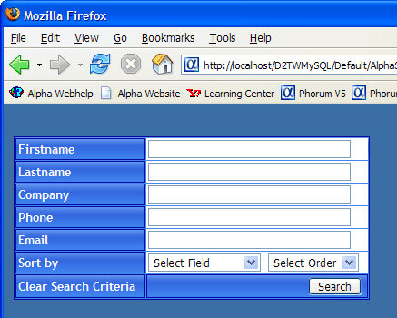
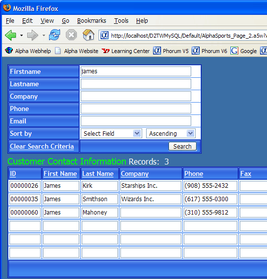

Previewing the Grid
When you republish the "AlphaSports_Customer_Grid" page, it will automatically republish its modified grid component.
Click
 to preserve your work and close the HTML Editor.
to preserve your work and close the HTML Editor.Click Close to return to the Web Projects Control Panel.
Right click "AlphaSports_Customer_Grid" and select Publish (local webroot) and open. You should see something like the following.

Finally, see how the component works. Enter "james" into the Firstname field and click Search.

See Also
Supported By
Alpha Five Version 6 and Above